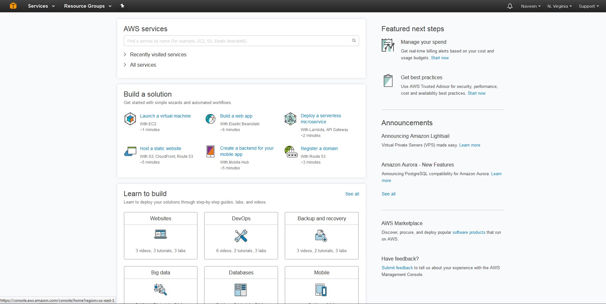
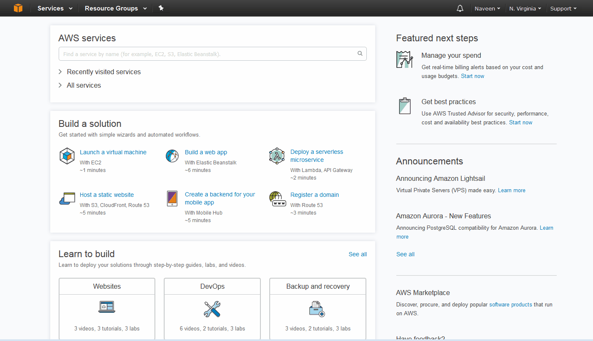
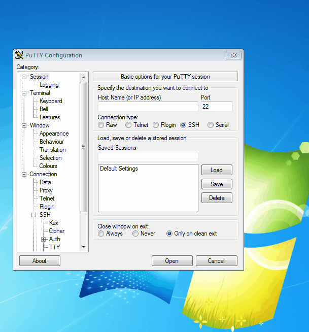
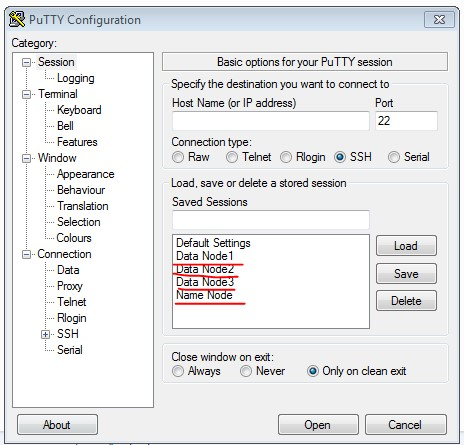
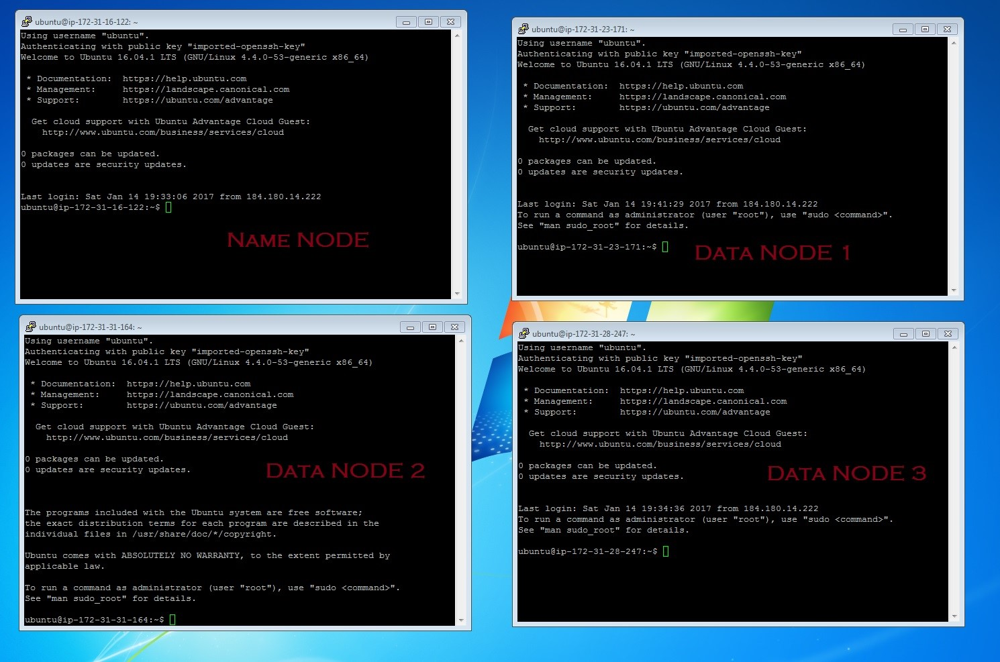
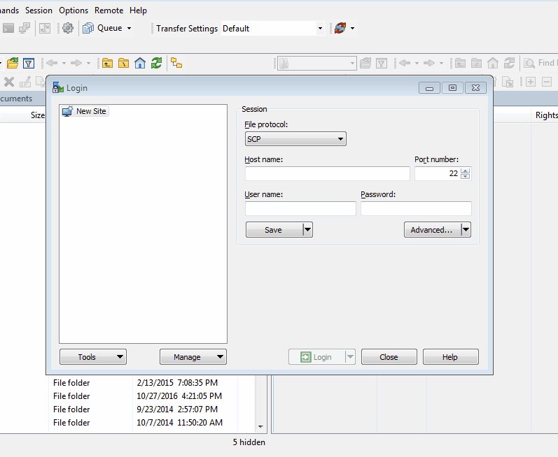

Setting up a Hadoop cluster
In this tutorial we will be setting up a 4 node Hadoop cluster on the cloud. For a 4 node cluster we need 4 machines right? Amazon has a free tier service which we can utilize for this purpose. We can create 4 amazon EC2 instances each serving as a node. An EC2 instance is a virtual server in Amazon's Elastic Compute Cloud (EC2) for running applications on the Amazon Web Services (AWS) infrastructure. In short an EC2 instance is nothing but a virtual computer.I will be explaining the step by step process to setup a 4 node Hadoop cluster on AWS EC2.
Setting up Amazon EC2 Instances
You need to have an amazon web service account to begin with. You can create an account here - https://aws.amazon.com/Once you have created an account sign in to the console. Once logged in you will see a screen like below;

From there click on Services and EC2. Then click on the Launch Instance button. The steps are very intuitive and here a gif image of the process;

Please note that you have to save the keypair in a secure location. If you need to access these instances/nodes you will need that keypair. You will see later on in the tutorial how we use the keypair to access the nodes.

Here are Public DNS and Private IPS I created:
|
|
Public DNS/ Host Name |
Private IP |
|
Name Node |
ec2-54-152-158-183.compute-1.amazonaws.com |
172.31.26.98 |
|
Data Node 1 |
ec2-54-173-155-140.compute-1.amazonaws.com |
172.31.23.171 |
|
Data Node 2 |
ec2-52-90-101-248.compute-1.amazonaws.com |
172.31.31.164 |
|
Data Node 3 |
ec2-54-210-48-178.compute-1.amazonaws.com |
172.31.28.247 |
Now we have our 4 node cluster ready to go- This is basically 4 machines each with unique ip address. Note down all the 4 Public DNS and Public IP as we will be using this later in our setup.
Setting up Putty
We will be connecting to our cluster using putty. Putty is a free ssh and telnet client for windows. This tool will allow you to securely login to a Unix computer(nodes in our case) and open a terminal to execute shell command. It will basically mimic as if you opened a command prompt/terminal in the Unix machine. Before we can login to the node we need a key. Rememeber we downladed a key pair. This keypair needs to be converted to .ppk file from .pem. Putty keygen is used for this - You can download it for free. Here is how you convert the keypair file;

Once the keypair is converted to .ppk file you can use this file to connect to the cluster. Here is how you do that.

You have to repeat the same process for all three nodes. All uses the same keypair. Once completed putty UI will look like this;

Now you can access all 4 nodes using putty;

Setting up WinSCP
WinSCP is an open source free SFTP client and FTP client for Windows. Its main function is the secure file transfer between local and remote computer. It also provides you a graphical user interface to see the folder structure. The settings are similar to that of putty. Here is a gif of the setup;

Setting up passwordless ssh
I promise this is the last set up we need before we can actually install hadoop and spin up the cluster. This is very important and if not done correctly you will end up getting errors when you spin up the clusters.
First step is to move your keypair file over to name nodes /home/ubuntu/.ssh folder. You can use Winscp for this or use scp from command line. I will also rename the key file to id_rsa . Make sure you change your keypair file name and the namenode host file name accordingly.
pscp -i hadoop.ppk hadoop.pem ubuntu@ ec2-54-152-158-183.compute-1.amazonaws.com:/home/ubuntu/.ssh/id_rsa
Then set the permission level on the /home/ubuntu/.ssh, authorized keys and id_rsa
chmod 700 /home/ubuntu/.ssh chmod 640 /home/ubunt/.ssh/authorized_keys chmod 600 /home/ubuntu/id_rsa
Now repeat this for all the nodes using winscp or scp(from name node).
You can run the following command from name node. Make sure to change datanode1,datanode2 and datanode3 to their respective hostname/Public DNS . We will be changing the hostname from the long Public DNS to simple hostname later in the tutorial.
scp /home/ubuntu/.ssh/id_rsa datanode1:/home/ubuntu/.ssh scp /home/ubuntu/.ssh/id_rsa datanode2:/home/ubuntu/.ssh scp /home/ubuntu/.ssh/id_rsa datanode3:/home/ubuntu/.ssh
As promised we are all set to install hadoop now!!
Setting up Hadoop
Finally we are all set to install hadoop!! There are only 9 steps and wouldn't take more than 20 minutes. On all the nodes/instances;
- Update all the packages in the server just to make sure its up to date
- Install java
- Download hadoop
- Untar/unzip the downloaded hadoop package and move to /usr/local/hadoop folder
- Modify hosts file
- Modify .profile file
- Modify the following configuration files that comes with hadoop package:
- hadoop-env.sh
- core-site.xml
- hdfs-site.xml
- slaves
- Create hdfs name node and data node folder for name node and data node respectively.
- Format Name node and start the daemons.
I will go through each step in detail;
Update all the packages
Just to make sure all our instances have the latest packages. Run on all four nodes using putty.
sudo apt-get update
Install java
This will download and install java developmet kit and once installed you can check the version java -version. Run the command on all four nodes using putty.
sudo apt-get install openjdk-8-jdk
Download hadoop
The following code will download hadoop 2.7.1 tar file from the apache website to the download folder in the linux machine. Please make sure the download path is correct as the path can change. Run the command on all four nodes using putty.
wget http:// apache.mirrors.tds.net/hadoop/common/hadoop-2.7.1/hadoop-2.7.1.tar.gz –P ~/Download
Untar/unzip and move the downloaded hadoop package
Using the below command in putty untar/unzip the downloaded hadoop package and move it folder /usr/local/hadoop
sudo tar zxvf ~/hadoop-* -C /usr/local sudo mv /usr/local/hadoop-* /usr/local/hadoop
Modify hosts file
Modify .profile file
Modify the .profile file in /home/ubuntu/.profile to set the environment for hadoop. .profile file will be hidden so make sure to unhide the folders.
#Hadoop Environment Variables export JAVA_HOME=/usr export PATH=$PATH:$JAVA_HOME/bin export HADOOP_HOME=/usr/local/hadoop export PATH=$PATH:$HADOOP_HOME/bin export HADOOP_CONF_DIR=/usr/local/hadoop/etc/hadoop
Load the variables- just to make the system know about the updates
. ~/.profile
Modify the following configuration files
hadoop-env.sh
# The java implementation to use. export JAVA_HOME=/usr
core-site.xml
<configuration>
<property>
<name>fs.defaultFS</name>
<value>hdfs://ec2-54-210-47-166.compute-1.amazonaws.com:9000</value>
</property>
</configuration>
hdfs-site.xml
<configuration>
<property>
<name>dfs.replication</name>
<value>3</value>
</property>
<property>
<name>dfs.namenode.name.dir</name>
<value>file:///usr/local/hadoop/hadoop_data/hdfs/namenode</value>
</property>
</configuration>
slaves
datanode1 datanode2 datanode3
Create hdfs name node and data node folder for name node and data node respectively.
sudo mkdir –p $HADOOP_HOME/hadoop_data/hdfs/namenode sudo mkdir –p $HADOOP_HOME/hadoop_data/hdfs/datanode
Just to make sure there is no issues with ownership lets change ownership of Hadoop home to Ubuntu
sudo chown –R ubuntu $HADOOP_HOME
Format Name node
hdfs namenode-format
Thats it !!! Yayyyy!!! Now start the hadoop daemons using the following command!
$HADOOP_HOME/sbin/start-dfs.sh